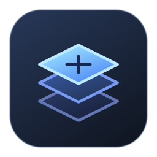

Eagle Paraglider
Logansam’s Switch port of banan039’s original. Use one paraglider replacement in this group.
eagle.bnp
Eagle Paraglider on GameBanana

MacNative ModsSwitch BOTW 1.6.0 on MacNativeGames
Start with this tested mod group. Download the Switch BNPs from the creators’ pages, then import them together in the order shown.
In the app, choose Import → Merge BCML BNP packs, add the files in order, and select Merge & Import. The workflow uses US English, default pack options, and base-game content.
Review the setup stepsEagle Paraglider → Better Arrow Sounds → Souped Up Cooking Sounds
The 11-file overlay reached gameplay on a copied save. Individual paraglider and sound effects still need separate checks.
Logansam’s Switch port of banan039’s original. Use one paraglider replacement in this group.
eagle.bnp
Eagle Paraglider on GameBanana
HGStone’s Switch BNP replaces sounds for six special arrow types. The pack declares no dependencies.
new_arrow_sounds_switch.bnp
Arrow Sounds on GameBanana
Use HGStone’s Switch BNP for this group. The creator also offers a separate standalone archive.
soupedupcookingsoundsswitch.bnp
Cooking Sounds on GameBanana
Share the game version, macOS version, import type, and whether you reached gameplay. A short description is enough.
This group was tested on BOTW 1.6.0 on one Apple silicon Mac. Add other packs one at a time so you can identify changes in compatibility.